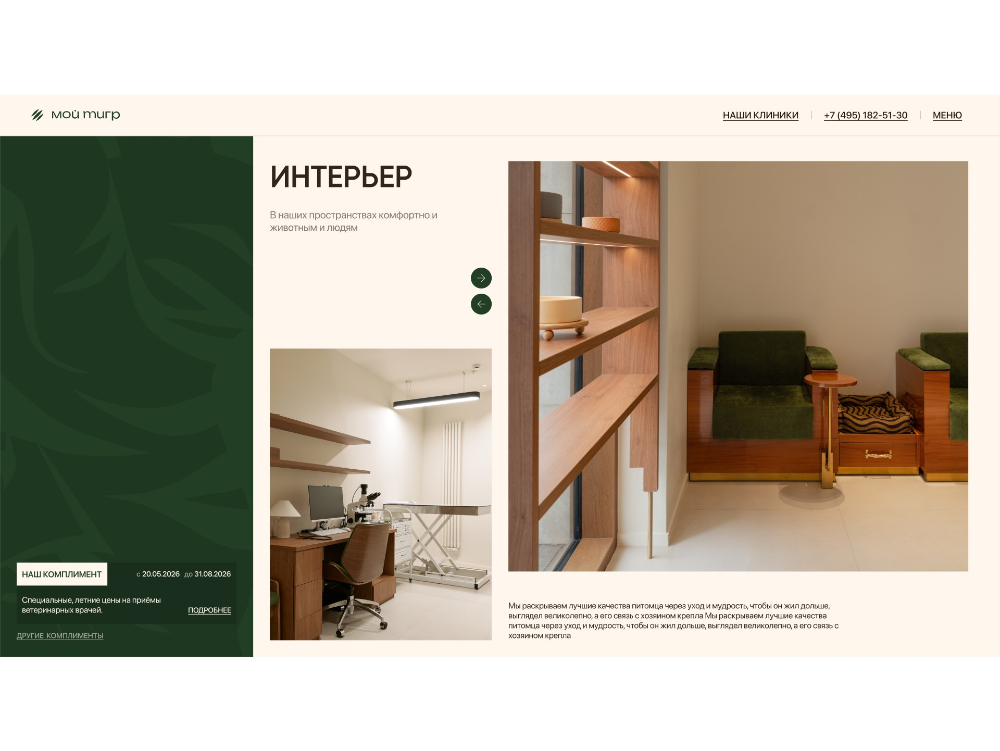
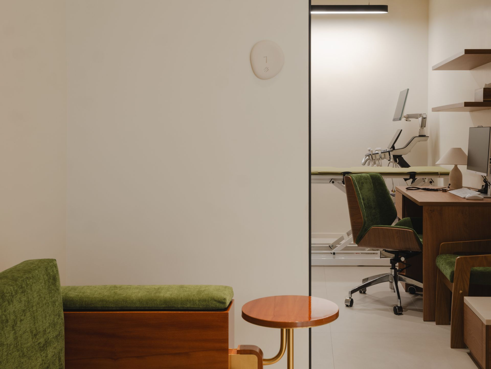
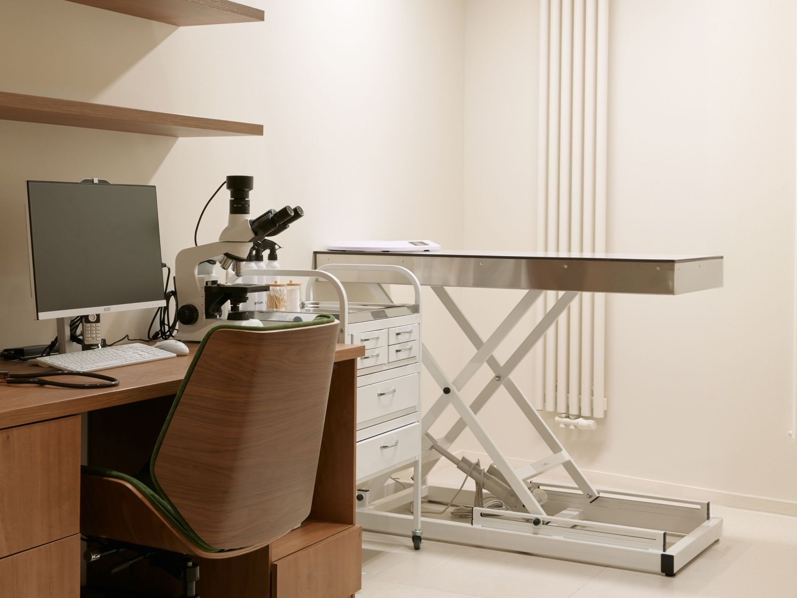
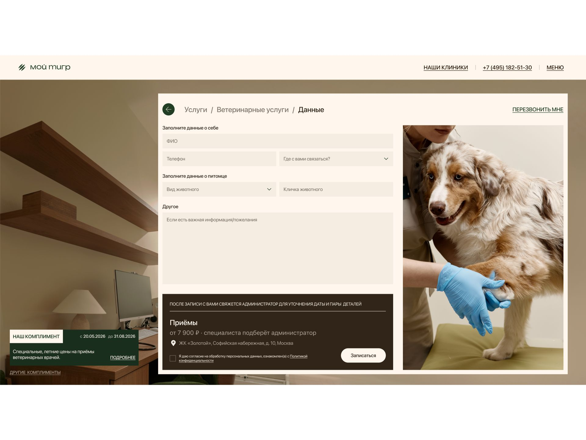
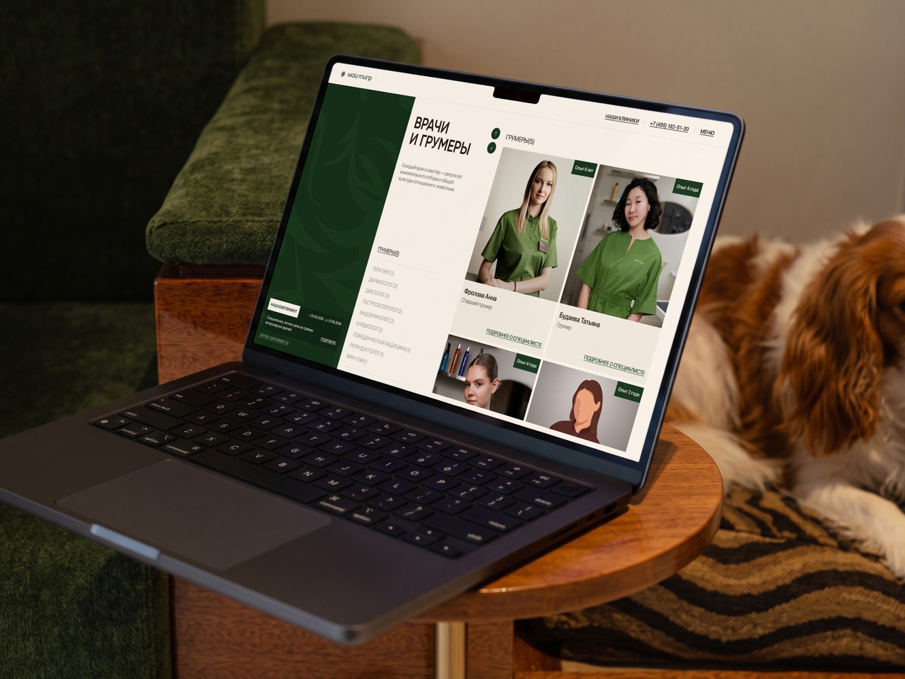
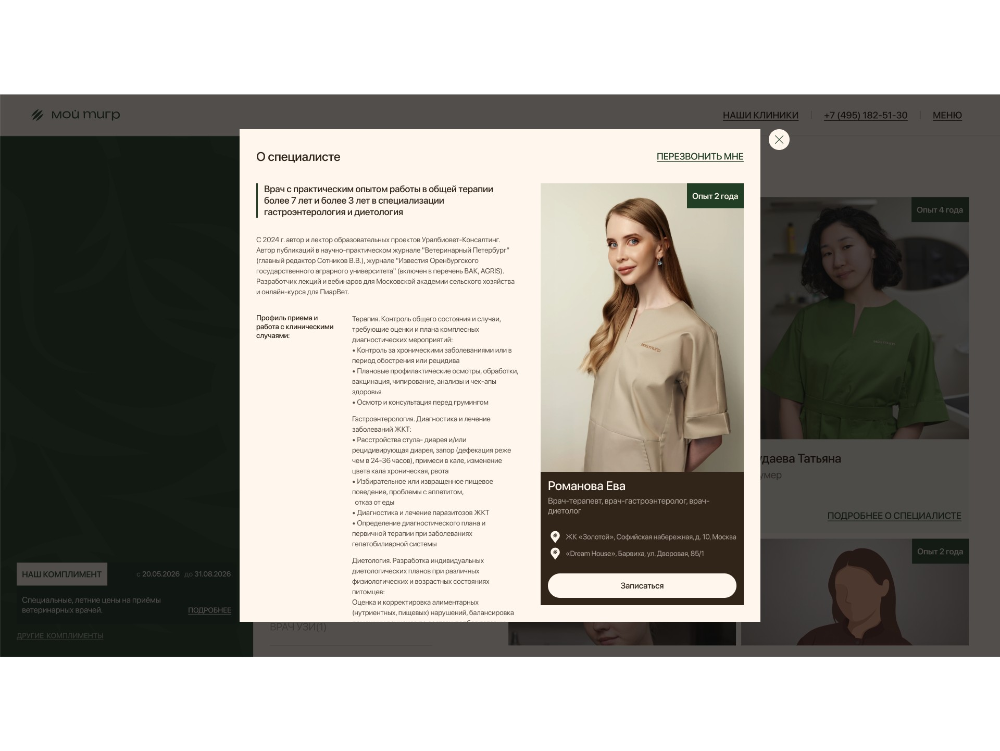
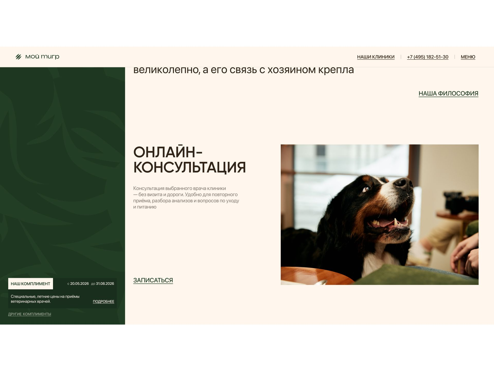
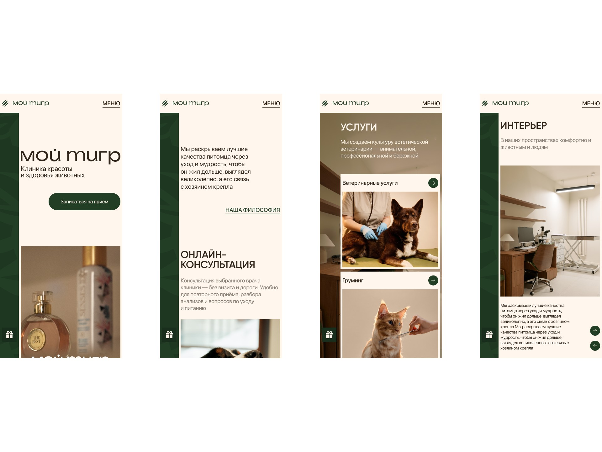

мой тигр
«Мой тигр» — клиника красоты и здоровья животных в Москве: ветеринария и груминг под одной крышей. Я спроектировал для клиники отдельный лендинг для сбора заявок — альтернативу основному сайту, которую можно запускать в рекламе и сравнивать с ним по конверсии.
в этом кейсе
-
Скидки запрещены. Акции нужны.
«Комплименты» клиники — повод записаться, который не понижает статус бренда. -
Стрижка, которая начинается с ветеринара.
Как связка «грумер + врач» стала главным аргументом для записи. -
Самая быстрая гипотеза проиграла первой.
Почему акционный лендинг отклонён ещё до первого макета. -
Решения защищал не слайдами, а работающей страницей.
Живой прототип на коде, собранный с нейросетью: защита перед клиентом и тесты до разработки.
 web-design
web-designЗадача
Спроектировать лендинг для конверсии заявок на приём и груминг — как альтернативный вариант основному сайту клиники. Основной сайт рассказывает о клинике всё; лендинг должен делать одно — приводить заявки из рекламы.
Ограничения клиента: фирменные паттерны (силуэты тигра и царапины от когтей) и живые фотографии, премиальный стиль и нестандартные решения в дизайне.
Отдельная задача: показать подход клиники — груминг здесь не косметическая, а полноценная медицинская процедура, которая требует профессионального подхода.
Аналитика
Чтобы понять, что мешает оставить заявку, разобрал аудиторию, рынок и точки входа.
Аудитория выбирает по доверию. Владельцы собак и кошек, для которых питомец — член семьи. Цена для них вторична; решают ответы на вопросы «кто будет лечить и стричь», «в каких условиях» и «как здесь относятся к животным». Вывод: заявку оставят, когда доверие сформировано, — значит, лендинг должен быстро показать людей, место и подход.
Груминг продают как косметику. Салоны конкурируют ценой и обещают «помыть и подстричь». Премиальному владельцу важнее, чтобы мастер заметил проблему с кожей, ушами или шерстью и передал питомца врачу. Вывод: связка «грумер + врач» — главное отличие клиники, и его нужно показать как причину записаться именно сюда.
Скидки конфликтуют с премиальностью. «−30%» и зачёркнутые цены — самый быстрый способ получить заявки, но в премиальном сегменте они считываются как сигнал дешевизны и приводят тех, кто ищет подешевле. Вывод: спецпредложения нужны, но без языка скидок.
Точки входа разные. Один приходит за услугой, другой — к конкретному врачу, третий — по спецпредложению, четвёртый не готов ехать и хочет сначала проконсультироваться. Вывод: каждая из этих дорог должна приводить к короткой заявке без лишних шагов.
Гипотезы
Из выводов аналитики собрал три концепции лендинга.
Гипотеза А — «акционный лендинг». Яркое предложение со скидкой на первом экране и форма записи. Быстро даёт заявки в любой нише, но противоречит премиальному позиционированию и привлекает не ту аудиторию.
Гипотеза Б — «короткая версия основного сайта». Те же разделы, только компактнее. Безопасно для бренда, но лендинг почти не будет отличаться от сайта, и тест не покажет, что работает лучше.
Гипотеза В — «доверие и короткий путь». Сначала формируем доверие через людей, интерьеры и подход клиники — врачи и грумеры одной командой. Запись доступна из любой точки страницы в несколько шагов, а спецпредложения подаются как забота — «Комплименты» клиники.
Какую гипотезу выбрал и почему
В работу пошла гипотеза В, потому что только она отвечает на все выводы аналитики:
аудитория выбирает по доверию — гипотеза строит доверие раньше, чем просит заявку;
главное отличие клиники — груминг под контролем врачей — становится аргументом для записи, а не строкой в прайсе;
спецпредложения остаются, но не понижают статус бренда;
лендинг заметно отличается от основного сайта, поэтому сравнение конверсии будет честным.
Гипотеза А отклонена из-за конфликта с брендом, гипотеза Б — потому что не даёт нового результата для сравнения.

Разработка макетов
Каждое решение в макетах проверял одним вопросом: как оно приближает человека к заявке.
Первый экран: кто мы и что делать. Крупный логотип, позиционирование «Клиника красоты и здоровья животных», живое фото и кнопка «Записаться на приём».
На конверсию: за пару секунд понятно, что это за место и какое действие главное, — кнопка записи видна без прокрутки.

Закреплённая панель с «Комплиментом». Слева — тёмная панель с фирменным паттерном тигра и актуальным комплиментом клиники, она остаётся на экране при прокрутке.
На конверсию: повод записаться всегда в поле зрения, но без всплывающих окон и баннеров, которые раздражают и удешевляют. А фирменный паттерн выполняет требование клиента и делает страницу узнаваемой.
Запись поверх страницы на фоне кабинета. Форма открывается слоем поверх лендинга: выбор услуги, короткая форма, подтверждение. Фоном — фотография кабинета клиники.
На конверсию: нет перехода на другую страницу — меньше шансов потерять человека по дороге. Фото кабинета продолжает работать на доверие прямо в момент решения.

Короткая форма и удобный канал связи. Минимум полей: имя, телефон, данные о питомце. Человек сам выбирает, где с ним связаться, — по телефону, в Telegram или в другом мессенджере. Для тех, у кого нет времени на форму, — обратный звонок.
На конверсию: каждое лишнее поле снижает долю заполнивших форму, а привычный канал связи повышает шанс, что после заявки человек ответит администратору.

Груминг рядом с ветеринарией. Ветеринарные услуги и груминг стоят рядом и на равных, врачи и грумеры показаны одной командой: опыт, специализация, подробный профиль. В «Нашей философии» сказано прямо: мастера обучены особенностям пород и работают в связке с врачами, поэтому каждая стрижка — ещё и проверка здоровья.
На конверсию: снимает главный страх — доверить питомца незнакомым людям — и превращает груминг из «стрижки за цену» в услугу, за которую премиальный клиент готов платить.


«Комплименты» вместо скидок. Спецпредложения — это комплименты клиники: специальная цена и сроки действия, без процентов и зачёркнутых цен. Каждый раскрывается как экспертный материал. Например, гастро-чекап: сначала симптомы, на которые стоит обратить внимание, потом состав программы и цена.
На конверсию: срок действия даёт повод записаться сейчас, а экспертный текст объясняет, зачем это питомцу. Человек покупает заботу, а не скидку, — и бренд сохраняет статус.
Онлайн-консультация. Отдельный блок и свой сценарий записи: выбор врача-специалиста, данные и предпочтительное время.
На конверсию: дополнительная точка входа для тех, кто ещё не готов ехать в клинику, — небольшой первый шаг, после которого проще прийти на очный приём.

Отзывы и клиники на карте. Отзывы с рейтингом на Яндекс Картах, адреса клиник, часы работы и кнопка «Построить маршрут» — в конце страницы.
На конверсию: социальное доказательство и ответ на вопрос «далеко ли ехать» появляются именно там, где человек принимает решение.
Презентация и защита
Показал клиенту концепцию на живом прототипе — не на статичных картинках, а на работающей странице — и по той же цепочке: что выяснила аналитика, какие были гипотезы, почему выбрана гипотеза В и как каждое решение работает на заявку.
Отказ от классических скидок. Самое неочевидное решение для клиники, которой нужны спецпредложения. Аргумент: скидка привлекает тех, кто ищет подешевле, а «Комплимент» с экспертным объяснением и сроком действия даёт тот же повод записаться и сохраняет позиционирование.
Упрощение записи по итогам обсуждения. Убрали из сценария всё, что не помогает дойти до заявки: врачи отвязаны от услуг, шаг выбора специалиста и переключатель клиники исключены — после выбора услуги человек сразу попадает в форму. Отдельно добавили сценарий онлайн-консультации.
Передача в разработку
Передал макеты для десктопа и телефона, все модальные окна (запись через услуги и через специалистов, комплименты, философия, профиль специалиста, обратный звонок) и каждый шаг сценариев записи. Модальные окна собраны компонентами, а правки после презентации подписаны прямо в макете, чтобы разработчик видел, что и почему изменилось.

Результаты
Метрики собираются. Лендинг запущен как альтернатива основному сайту. Сравниваем конверсию в заявку между лендингом и сайтом, а также смотрим, какие точки входа приводят больше заявок: услуги, специалисты, комплименты или онлайн-консультация. Как только появятся первые результаты, они будут здесь.
Где и как использовал нейросети
Анализ данных. Прогнал через нейросеть отзывы о ветклиниках и груминг-салонах и кластеризовал страхи владельцев: кому доверить питомца, стресс животного, «стригут, но не смотрят на здоровье». Эти кластеры легли в выводы аналитики.
Живой прототип на коде. С помощью нейросети собрал из макетов работающий прототип лендинга: со сценариями записи, «Комплиментами» и модальными окнами. На нём защитил решения перед клиентом и провёл тесты с пользователями ещё до разработки.
Структура «Комплиментов». ИИ помог разложить экспертные материалы в понятную схему — от симптомов к программе и цене; факты и формулировки — от клиники.
Рутина в Figma. ИИ-агент взял на себя нейминг слоёв, сборку модальных окон в компоненты и проверку состояний на всех шагах записи.